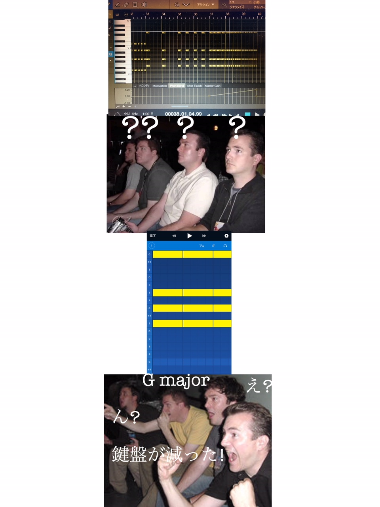

この記事はKCCT-Densan Advent Calendar 2017の20日目の記事です.
こんにちは。
電子工学科2年、メディア(というか作曲)班の永井です。
作曲名義：U-TurN ぼくのさうんどくらうどのぺーじ(突然の広告)
ということで、作曲班らしい事を話題にこのAdvent Calendarを書いていきたいと思います。
iPhone/iPad用の作曲アプリ！！！！！以上！
シンプルな操作性で入門者でも扱いやすい、かつ中級者でもお世話になる、頼れる奴です。
※Android版はまだ出てないのです。残念！対応はよ
とりあえずこの画像を見て欲しい。

お前は何を言っているんだ
何が言いたいかというと、音楽理論的なコードで音階が並んでいるので、メロディーが作りやすいということです。 後、この手のアプリは横に向けないといけなかったり譜面が横に向かなかったりしますが、このMedlyは縦持ちでも譜面が横に流れていきます。地味に便利。
(このアプリ以外でもそういうのあるかもしれないけど、とりあえずこのアプリのメリットとして紹介)
このアプリに最初から収録されている音源は楽器15種＋ドラム1種、あと録音機能とVox、ライザーなどが少々。
この時点でもピアノのインストや簡単な電子音楽などが十分作れますが、パックで追加される楽器はさらに魅力的！
うん、本当に使えば便利さが分かる！(ヤケ)
ということでこんな入り口もあるんだからハードル高くて作曲に手を出せなかった人もこれがチャンス！是非作曲を始めないか？
ということで以上、クソみたいな説明になりましたがMedlyの紹介を終わります。
閲覧ありがとうございました。
後、これからもよろしくお願いします。